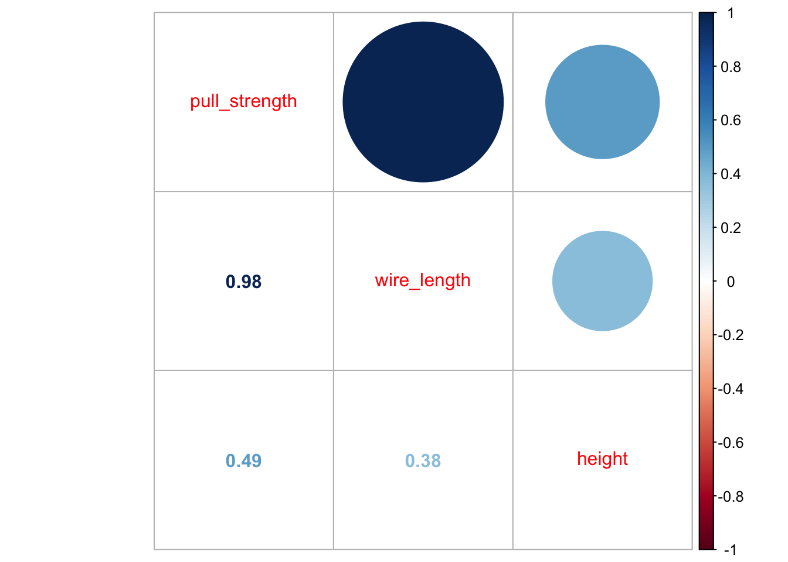
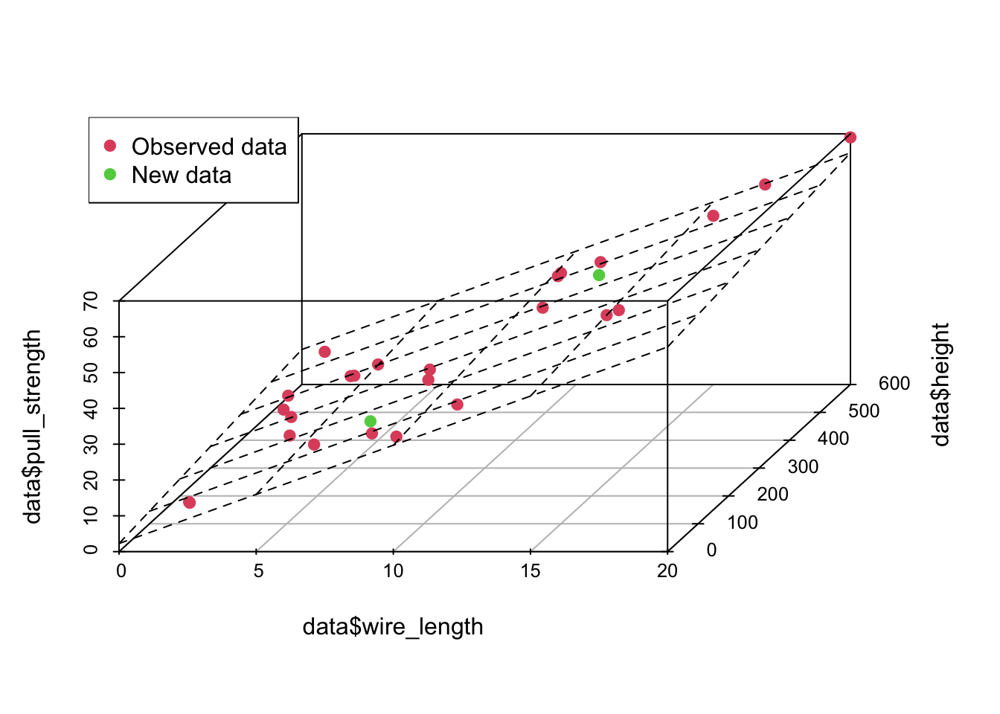

Case Study 04
André Victor Ribeiro Amaral
Objectives
In this case study, we will fit a multiple linear regression model. This example will be simple, and we will also be able to visualize the estimated surface (most of the time, it is not possible neither important). To do this, we will fit the model, check the assumptions, interpret it, visualize the estimated surface, and predict (and plot) new values based on this fitted model.
1 Introduction
For this problem, we will analyse data collected in an observational study in a semiconductor manufacturing plant. Data were retrieved from the Applied Statistics and Probability for Engineers book. You can download the .csv file here. In this plant, the finished semiconductor is wire-bonded to a frame. The variables reported are pull strength (a measure of the amount of force required to break the bond), the wire length, and the height of the die. Thus, the data set contains following the variables:
pull_strength(quantitative)wire_length(quantitative)height(quantitative)
2 Exploring the data set
In order to explore the data set and perform initial analyses, we have to read it (with R) first. Provided that the .csv file is saved within the datasets/ folder, one can read the file in the following way.
col.names <- c('pull_strength', 'wire_length', 'height')
data <- read.csv(file = 'datasets/wire_bond.csv', header = FALSE, sep = ',', col.names = col.names)
head(data, 5)## pull_strength wire_length height
## 1 9.95 2 50
## 2 24.45 8 110
## 3 31.75 11 120
## 4 35.00 10 550
## 5 25.02 8 295Now, let’s see a summary of our data.
summary(data)## pull_strength wire_length height
## Min. : 9.60 Min. : 1.00 Min. : 50.0
## 1st Qu.:17.08 1st Qu.: 4.00 1st Qu.:200.0
## Median :24.45 Median : 8.00 Median :360.0
## Mean :29.03 Mean : 8.24 Mean :331.8
## 3rd Qu.:37.00 3rd Qu.:11.00 3rd Qu.:500.0
## Max. :69.00 Max. :20.00 Max. :600.0In this case, there are no missing values—which is great. However, since we want to use most information from this data set, it might not be easy to visualize how one attribute (in our case pull_strength) can be written as a function of more than two variables at the same time. Fortunately, we can still plot data in 3D (using the scatterplot3d() function from the scatterplot3d package).
library('scatterplot3d')
scatterplot3d(data$wire_length, data$height, data$pull_strength, color = 2, pch = 19, angle = 70)Also, it is useful to see how variables are correlated. To do this, we can plot (at least) two types of graphs; in this case, we will use the scatterplotMatrix() function from the car package, and the corrplot.mixed() function from the corrplot package to plot the correlation (from cor()) matrix.
library('car')
scatterplotMatrix(data)
library('corrplot')## corrplot 0.92 loadedcorrplot.mixed(cor(data))
From the second plot, we can see that pull_strength is highly correlated with wire_length, and this relation is detailed in the first plot. These graphs will be even more useful once we have more variables (as we will see in our next problem).
3 Fitting a model
Our very first task will be fitting a model with all variables so that we can try to explain how pull_strength relates with the other variables. We can do this in the following way.
model <- lm(formula = pull_strength ~ ., data = data)
summary(model)##
## Call:
## lm(formula = pull_strength ~ ., data = data)
##
## Residuals:
## Min 1Q Median 3Q Max
## -3.865 -1.542 -0.362 1.196 5.841
##
## Coefficients:
## Estimate Std. Error t value Pr(>|t|)
## (Intercept) 2.263791 1.060066 2.136 0.044099 *
## wire_length 2.744270 0.093524 29.343 < 2e-16 ***
## height 0.012528 0.002798 4.477 0.000188 ***
## ---
## Signif. codes: 0 '***' 0.001 '**' 0.01 '*' 0.05 '.' 0.1 ' ' 1
##
## Residual standard error: 2.288 on 22 degrees of freedom
## Multiple R-squared: 0.9811, Adjusted R-squared: 0.9794
## F-statistic: 572.2 on 2 and 22 DF, p-value: < 2.2e-16As we can see from the summary, for a significance level of \(5\%\), all coefficients are different than zero. Thus, we should keep them (for our next problem, we will try to simplify the model further).
Once we have the model, a next step would be performing a residual analysis. To do this, we can plot the diagnostic graphs and run the appropriate tests.
plot(model, which = c(1, 2))The plot seems okay, but we still have to do the tests. As a remark, and as extracted from this page, “the red line is a LOWESS fit to your residuals vs fitted plot. Basically, it’s smoothing over the points to look for certain kinds of patterns in the residuals. For example, if you fit a linear regression on data that looked like \(y = x^2\), you’d see a noticeable bowed shape”. Regarding the tests, we have the following
ncvTest(model)## Non-constant Variance Score Test
## Variance formula: ~ fitted.values
## Chisquare = 0.04524206, Df = 1, p = 0.83156shapiro.test(resid(model))##
## Shapiro-Wilk normality test
##
## data: resid(model)
## W = 0.95827, p-value = 0.381Also, from the test results, we fail to reject the equal variance and normality assumptions, meaning that we have a good model for our data.
In particular, the model is given by
\[\begin{align*} \texttt{pull_strength}_i &= 2.264 + 2.744\texttt{wire_length}_i + 0.013\texttt{height}_i \end{align*}\]
And we can plot the fitted model in the following way
plot3d <- scatterplot3d(data$wire_length, data$height, data$pull_strength, color = 2, pch = 19, angle = 70)
plot3d$plane3d(model)4 Predicting unknown values
Now that we have a “good” fitted model, we can predict, the value of pull_strength for new values of wire_length and height. For instance, we can predict the value of pull_strength, such that wire_length is equal to 7.5 and 12.5 and height is equal to 150 and 450, respectively. Notice that your new points must lie within the range for the observed data, otherwise your model may not be appropriate for predicting extrapolated points.
newdata <- data.frame(wire_length = c(7.5, 12.5), height = c(150, 450))
(pred1 <- predict(object = model, newdata = newdata, interval = 'confidence'))## fit lwr upr
## 1 24.72499 23.33957 26.11040
## 2 42.20468 40.92987 43.47948(pred2 <- predict(object = model, newdata = newdata, interval = 'prediction'))## fit lwr upr
## 1 24.72499 19.78175 29.66822
## 2 42.20468 37.29130 47.11805newdata <- cbind(newdata, pull_strength = pred1[, 1])
data <- rbind(data, newdata)
plot3d <- scatterplot3d(data$wire_length, data$height, data$pull_strength, color = c(rep(2, nrow(data) - 2), 3, 3), pch = 19, angle = 70)
plot3d$plane3d(model)
legend('topleft', c('Observed data', 'New data'), col = c(2, 3), pch = 19)
From the above predicted values, notice that this time, we added the confidence interval and the prediction interval. As explained Applied Statistics and Probability for Engineers book, “the prediction interval is always wider than the confidence interval. The confidence interval expresses the error in estimating the mean of a distribution, and the prediction interval expresses the error in predicting a future observation from the distribution at the point \(\mathbf{x}_0\). This must include the error in estimating the mean at that point as well as the inherent variability in the random variable wire_length at the same value \(\mathbf{x} = \mathbf{x}_0\)”.